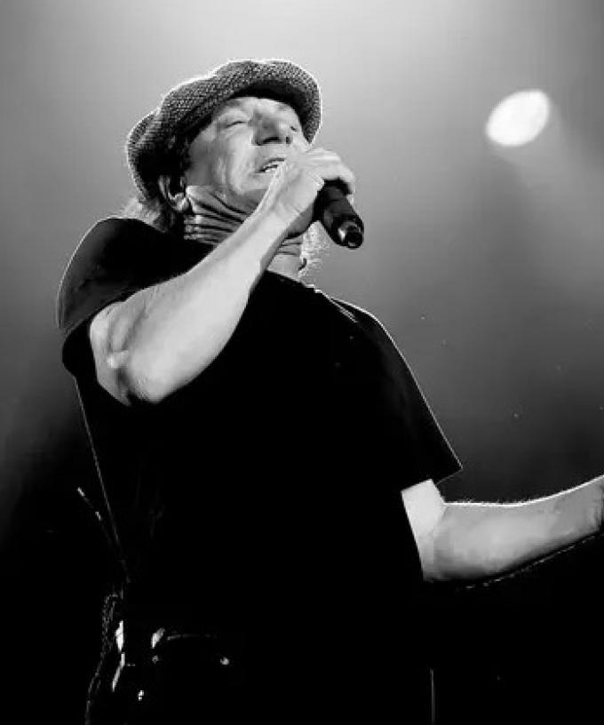
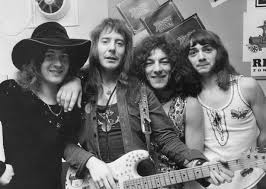

Penyanyi asal Inggris yang dikenal sebagai vokalis dari band asal Australia, AC/DC ini dilahirkan di Dunston, Gateshead, Inggris pada 5 Oktober 1945. Dengan AC/DC, dia dilantik ke dalam Rock and Roll Hall of Fame pada 2003.
Saat masih muda, Brian manggung dengan the Scouts, dan muncul di sebuah pementasan yang disiarkanoleh tv, dan ikut dengan kor gereja.
Band pertama Brian adalah Gobi Desert Canoe Club. Dia juga di band bernama Fresh. Dari 1970, Brian bermain dengan band kabaret/klub The Jasper Hart Band, membawakan lagu-lagu dari musikal Hair juga lagu-lagu soft-rock/pop saat itu. Dia dan anggota lain dari band itu membentuk Geordie.

Brian adalah salah satu anggota pendiri dari band Geordie yang dibentuk di Newcastle di 1971. Setelah memilik beberapa single hit, antara lain Top 10 di UK "All Because of You" (1973), band ini bubar di 1978. Menyusul kematian vokalis AC/DC Bon Scott pada 19 Februari 1980, Brian diminta ikut audisi untuk AC/DC di London. Peserta audisi lainnya adalah Terry Slesser dari Back Street Crawler dan Noddy Holder dari Slade. AC/DC setuju bahwa gaya penampilan Brian cocok dengan musik AC/DC. Album pertama Brian dengan AC/DC, Back in Black, menjadi album terlaris kelima di seluruh dunia.
Pada 9 Juli 2014, Brian diberi penghargaan sebuah gelar Doctor of Music oleh Northumbria University di kota asalnya Necastle upon Tyne karena jasanya dalam industri musik.